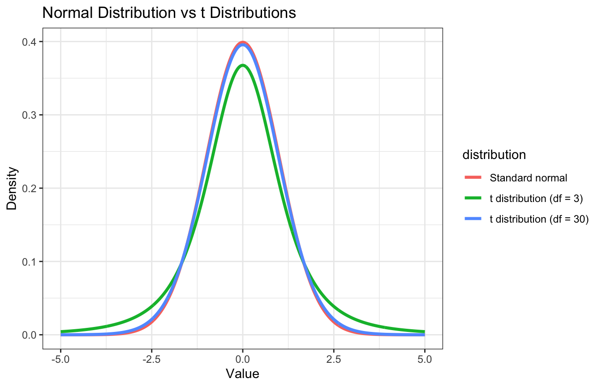
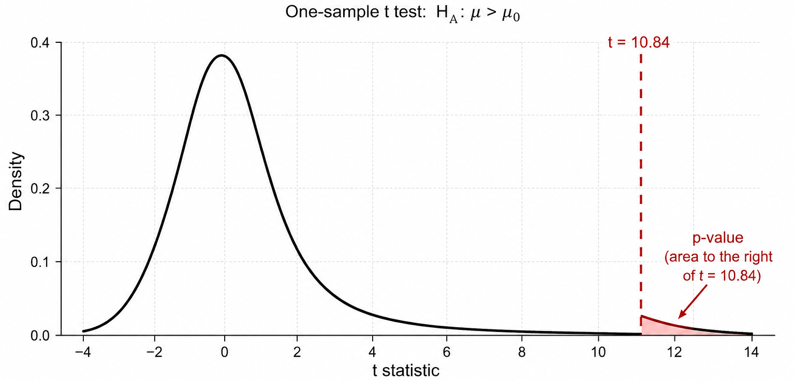
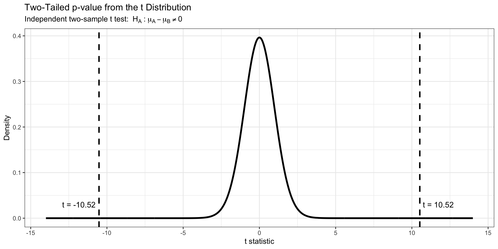
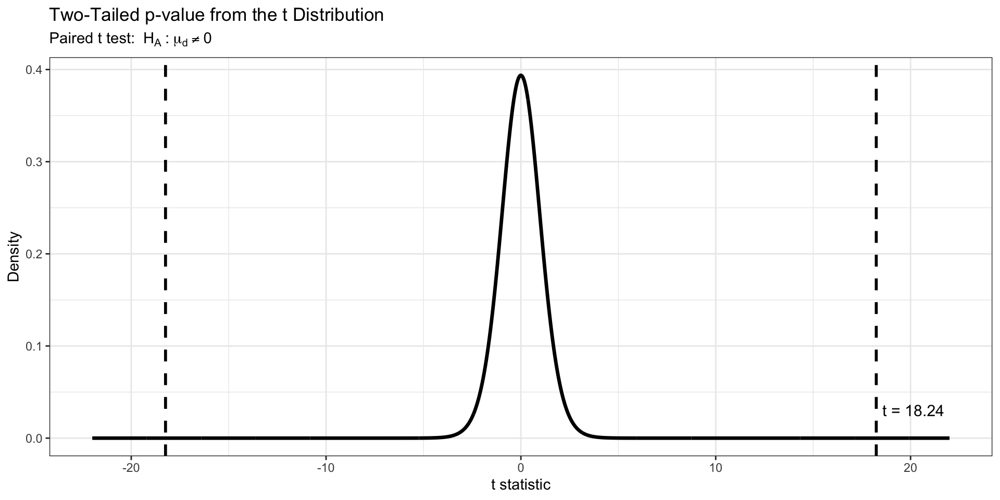

Motivation:
The lecture introduces:
As a review hypothesis tests involve:
defining null and alternative hypotheses
constructing a test statistic that summarized the stretch of evidence against the null hypothesis
computing a p-value that quantifies the probability of having obtained a comparable or more extreme value of the test statistic under the null hypothesis
based on the p-value we diced whether to reject the null hypothesis
research often involves studying continuous variables such as: tumor volume, percent tumor reduction, circulating tumor DNA concentration, or immune-cell abundance
measurements vary across patients because biological systems are inherently heterogeneous and because all sample-based measurements contain some degree of random variability
t-test : statistical approach used to compare the means of two groups of continuous measurements
t-tests also account for:
sampling variability
sample size
uncertainty in the population standard deviation
continuous variables often vary across patients
For example:
tumor burden differs across individuals
gene expression varies continuously
immune activation varies in magnitude
t-tests are designed to evaluate whether the observed sample mean differs enough from a hypothesized population mean to suggest a true biological effect
The statistical test can be used for:
p-value: probability of observing results at least as extreme as the observed data, given that the null hypothesis is true
The p-value measures:
how unusual the observed sample result would be if the null hypothesis were true.
Small p-values indicate:
Large p-values indicate:
t distribution : probability distribution used to model uncertainty in standardized sample mean differences when the population standard deviation is unknown
The t distribution is used because:
distribution accounts for:
Distribution key characteristics:
Note: as sample size increases:

Interpretation
standard normal distribution: narrow distribution because the population standard deviation is treated as known
t distribution(s): wider overall because variability is estimated from the sample data and introduces additional uncertainty
This effect is strongest with small sample sizes:
As sample size increases:
t-test produce both a test statistic [t-statistic] and p-value:
test statistic measures distance from the null hypothesis
p-value converts this distance into a probability under the null model
Interpretation:
large absolute t-statistics indicate that the observed difference is large compared with ordinary sampling variability
→ stronger evidence against the null hypothesis → smaller p-values
small absolute t-statistics indicate that the observed difference is similar in magnitude to ordinary sampling variability
→ weaker evidence against the null hypothesis → larger p-values
p-value is found as an area under the t distribution
t distribution represents the pattern of t-statistics we would expect to see from repeated samples if the null hypothesis were true
Once the observed t-statistic is determined ask:
How much area is in the part of the t distribution that is as extreme as, or more extreme than, our observed t-statistic?
| Alternative hypothesis | Scientific meaning | Where the p-value area is found |
|---|---|---|
| \(H_A: \mu > \mu_0\) | The population mean is greater than the benchmark | Area to the right of the calculated t-statistic |
| \(H_A: \mu < \mu_0\) | The population mean is less than the benchmark | Area to the left of the calculated t-statistic |
| \(H_A: \mu \neq \mu_0\) | The population mean is different from the benchmark | Area in both tails beyond the observed t-statistic |
| Statistical test | Scientific scenario | Question |
|---|---|---|
| One-sample (t) test | One group vs benchmark | Is the population mean different from a benchmark? |
| Independent two-sample (t) test | Two independent groups | Are the group means different? |
| Paired (t) test | Same patients measured twice | Is the average within-patient change different from 0? |
alternative hypothesis specifies either:
Upper-tailed test:
\(H_0 : \mu = \mu_0\)
\(H_A : \mu > \mu_0\)
Lower-tailed test:
\(H_0 : \mu = \mu_0\)
\(H_A : \mu < \mu_0\)
Background
A clinical oncology study measures tumor reduction percentage after treatment in a group of patients.
Researchers want to determine whether the average tumor reduction is greater than 0, which would suggest the treatment produces measurable tumor shrinkage on average.
Determine:
Does the treatment produce measurable tumor reduction on average?
Where:
\(H_0 : \mu = \mu_0\)
\(H_A : \mu > \mu_0\)
library(tidyverse)
set.seed(29)
tumor_df <- tibble(
patient_id = 1:20,
tumor_reduction = c(
4.27, 3.70, 5.56, 2.12, 6.85,
0.98, 5.13, 3.27, 2.41, 5.99,
4.13, 2.98, 1.84, 4.98, 6.70,
3.41, 2.27, 5.27, 5.41, 3.55
)
)
head(tumor_df, 5)# A tibble: 5 × 2
patient_id tumor_reduction
<int> <dbl>
1 1 4.27
2 2 3.7
3 3 5.56
4 4 2.12
5 5 6.85Perform One-Sample t Test
One Sample t-test
data: tumor_df$tumor_reduction
t = 10.845, df = 19, p-value = 7.011e-10
alternative hypothesis: true mean is greater than 0
95 percent confidence interval:
3.396723 Inf
sample estimates:
mean of x
4.041 Code Explanation
t.test() : performs a one-sample t testtumor_df$tumor_reduction : supplies the observed tumor reduction valuesmu = 0 : defines the null hypothesis benchmark:\(H_0:μ=0\)alternative = "greater" : specifies a right-tailed test:\(H_A:μ>0\)library(tidyverse)
set.seed(29)
tumor_df <- tibble(
patient_id = 1:20,
tumor_reduction = c(
4.27, 3.70, 5.56, 2.12, 6.85,
0.98, 5.13, 3.27, 2.41, 5.99,
4.13, 2.98, 1.84, 4.98, 6.70,
3.41, 2.27, 5.27, 5.41, 3.55
)
)
head(tumor_df, 5)# A tibble: 5 × 2
patient_id tumor_reduction
<int> <dbl>
1 1 4.27
2 2 3.7
3 3 5.56
4 4 2.12
5 5 6.85Perform One-Sample t Test
One Sample t-test
data: tumor_df$tumor_reduction
t = 10.845, df = 19, p-value = 7.011e-10
alternative hypothesis: true mean is greater than 0
95 percent confidence interval:
3.396723 Inf
sample estimates:
mean of x
4.041 Interpretation

Interpretation
Background
A clinical hypertension study compares systolic blood pressure between patients receiving Treatment A and Treatment B.
Researchers want to determine whether the average blood pressure differs between the two treatment groups.
Determine:
Is mean systolic blood pressure different between Treatment A and Treatment B?
Where:
\(H_0 : \mu_A - \mu_B = 0\)
\(H_A : \mu_A - \mu_B \ne 0\)
library(tidyverse)
set.seed(29)
bp_df <- tibble(
treatment = rep(c("Treatment A", "Treatment B"), each = 20),
systolic_bp = c(
117.9, 117.3, 109.9, 123.0, 125.5,
124.7, 119.8, 124.0, 118.7, 117.2,
118.5, 122.1, 119.0, 120.8, 118.9,
121.5, 119.4, 122.1, 116.8, 120.6,
135.9, 129.2, 131.9, 129.9, 131.2,
129.3, 131.8, 127.3, 129.5, 128.8,
138.2, 127.7, 135.9, 127.9, 127.3,
131.6, 128.6, 129.0, 135.1, 132.6
)
)
head(bp_df, 5)# A tibble: 5 × 2
treatment systolic_bp
<chr> <dbl>
1 Treatment A 118.
2 Treatment A 117.
3 Treatment A 110.
4 Treatment A 123
5 Treatment A 126.Perform Independent Two-Sample t Test
Welch Two Sample t-test
data: systolic_bp by treatment
t = -10.504, df = 37.747, p-value = 9.279e-13
alternative hypothesis: true difference in means between group Treatment A and group Treatment B is not equal to 0
95 percent confidence interval:
-13.18014 -8.91986
sample estimates:
mean in group Treatment A mean in group Treatment B
119.885 130.935 Code Explanation
t.test() : performs an independent two-sample t testsystolic_bp ~ treatment : compares mean systolic blood pressure between the two treatment groupsdata = bp_df : specifies the dataset containing the variables\(H_0:\mu_A - \mu_B = 0\)
alternative = "two.sided" : specifies a two-tailed test:\(H_A:\mu_A - \mu_B \ne 0\)
t_result stores the test results, including the t-statistic, degrees of freedom, p-value, confidence interval, and group meansPerform Independent Two-Sample t Test
Welch Two Sample t-test
data: systolic_bp by treatment
t = -10.504, df = 37.747, p-value = 9.279e-13
alternative hypothesis: true difference in means between group Treatment A and group Treatment B is not equal to 0
95 percent confidence interval:
-13.18014 -8.91986
sample estimates:
mean in group Treatment A mean in group Treatment B
119.885 130.935 Interpretation
library(tidyverse)
t_stat <- -10.52
df <- 38
p_value <- 2 * pt(
abs(t_stat),
df = df,
lower.tail = FALSE
)
plot_df <- tibble(
x = seq(-14, 14, length.out = 2000),
density = dt(x, df = df)
)
shade_df <- plot_df |>
filter(x <= t_stat | x >= abs(t_stat))
ggplot(plot_df, aes(x = x, y = density)) +
geom_line(linewidth = 1.2) +
geom_area(
data = shade_df,
aes(x = x, y = density),
alpha = 0.4
) +
geom_vline(
xintercept = c(t_stat, abs(t_stat)),
linetype = "dashed",
linewidth = 1
) +
annotate(
"text",
x = t_stat,
y = 0.03,
label = "t = -10.52",
hjust = 1.1,
size = 4
) +
annotate(
"text",
x = abs(t_stat),
y = 0.03,
label = "t = 10.52",
hjust = -0.1,
size = 4
) +
labs(
title = "Two-Tailed p-value from the t Distribution",
subtitle = expression(
"Independent two-sample t test: " ~
H[A] ~ ":" ~ mu[A] - mu[B] != 0
),
x = "t statistic",
y = "Density"
) +
theme_bw()
Interpretation
Background
A clinical neurology study measures symptom severity scores in the same patients before and after treatment.
Researchers want to determine whether the average within-patient change in symptom score differs from 0.
First define the paired difference:
\(d = \text{before} - \text{after}\)
Determine:
Is the average within-patient change in symptom score different from 0?
Where:
\(H_0:\mu_d = 0\)
\(H_A:\mu_d \ne 0\)
library(tidyverse)
set.seed(29)
symptom_df <- tibble(
patient_id = 1:20,
symptom_before = c(
24, 26, 25, 27, 23,
28, 26, 25, 24, 27,
29, 25, 26, 24, 28,
27, 25, 26, 24, 27
),
symptom_after = c(
18, 20, 19, 21, 18,
22, 20, 19, 18, 21,
23, 20, 21, 18, 22,
21, 19, 20, 18, 21
)
)
head(symptom_df, 5)# A tibble: 5 × 3
patient_id symptom_before symptom_after
<int> <dbl> <dbl>
1 1 24 18
2 2 26 20
3 3 25 19
4 4 27 21
5 5 23 18Perform Paired t Test
t_result <- t.test(
symptom_df$symptom_before,
symptom_df$symptom_after,
paired = TRUE,
alternative = "two.sided"
)
t_result
Paired t-test
data: symptom_df$symptom_before and symptom_df$symptom_after
t = 71.413, df = 19, p-value < 2.2e-16
alternative hypothesis: true mean difference is not equal to 0
95 percent confidence interval:
5.678544 6.021456
sample estimates:
mean difference
5.85 Code Explanation
t.test() : performs a paired t testsymptom_before and symptom_after contain measurements collected from the same patientspaired = TRUE : tells R to analyze within-patient differences rather than treating groups as independent\(d = \text{before} - \text{after}\)
\(H_0:\mu_d = 0\)
alternative = "two.sided" : specifies a two-tailed test:\(H_A:\mu_d \ne 0\)
t_result stores the test results, including the t-statistic, degrees of freedom, p-value, confidence interval, and mean paired differencet_result <- t.test(
symptom_df$symptom_before,
symptom_df$symptom_after,
paired = TRUE,
alternative = "two.sided"
)
t_result
Paired t-test
data: symptom_df$symptom_before and symptom_df$symptom_after
t = 71.413, df = 19, p-value < 2.2e-16
alternative hypothesis: true mean difference is not equal to 0
95 percent confidence interval:
5.678544 6.021456
sample estimates:
mean difference
5.85 Interpretation
library(tidyverse)
t_stat <- 18.24
df <- 19
p_value <- 2 * pt(
abs(t_stat),
df = df,
lower.tail = FALSE
)
plot_df <- tibble(
x = seq(-22, 22, length.out = 2000),
density = dt(x, df = df)
)
shade_df <- plot_df |>
filter(x <= -abs(t_stat) | x >= abs(t_stat))
ggplot(plot_df, aes(x = x, y = density)) +
geom_line(linewidth = 1.2) +
geom_area(
data = shade_df,
aes(x = x, y = density),
alpha = 0.4
) +
geom_vline(
xintercept = c(-abs(t_stat), abs(t_stat)),
linetype = "dashed",
linewidth = 1
) +
annotate(
"text",
x = abs(t_stat),
y = 0.03,
label = "t = 18.24",
hjust = -0.1,
size = 4
) +
labs(
title = "Two-Tailed p-value from the t Distribution",
subtitle = expression(
"Paired t test: " ~
H[A] ~ ":" ~ mu[d] != 0
),
x = "t statistic",
y = "Density"
) +
theme_bw()
Interpretation
black curve represents the theoretical t distribution under the null hypothesis that the population mean paired difference equals 0
dashed vertical lines mark the observed t-statistic values used to define the two-tailed p-value region
shaded tail regions represent the p-value for the two-tailed paired t test \(H_A:\mu_d\ne0\)
observed t-statistic is far from the center of the distribution, so the combined shaded probability area is extremely small \(\rightarrow\) indicates that observing a mean paired difference this extreme would be very unlikely if the true population mean difference were actually 0
extremely small p-value provides strong statistical evidence that the population mean within-patient symptom change differs from 0
black curve represents the theoretical t distribution under the null hypothesis that the population mean paired difference equals 0
dashed vertical lines mark the observed t-statistic values used to define the two-tailed p-value region
paired t test uses the alternative hypothesis: \(H_A: \mu_{d} \neq 0\)
observed t-statistic [t=18.24] is extremely far from the center of the distribution, indicating the observed mean paired difference is many estimated standard errors away from 0
shaded tail areas would represent the probability of observing a t-statistic this extreme or more extreme in either direction if the true population mean paired difference were actually 0
tail probabilities are extremely small \(\rightarrow\) p-value is small [p = < 2.2e-16]
provides statistical evidence that the average within-patient symptom score changed after treatment
different t-tests are used depending on the scientific design and structure of the data:
alternative hypothesis determines whether the p-value is calculated from the left tail, right tail, or both tails of the t distribution